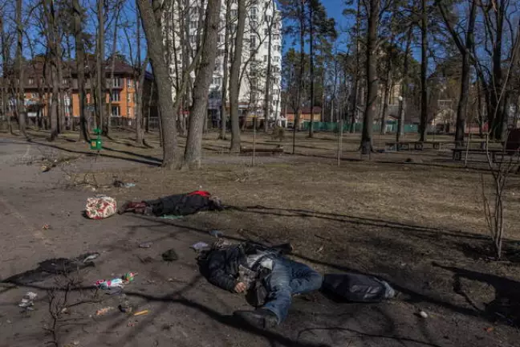

Itália condena massacre em Bucha; UE planeja sanções à Rússia
O governo italiano condenou neste domingo (3) o massacre na cidade ucraniana de Bucha, onde dezenas de corpos foram encontrados nas ruas e em valas comuns, enquanto a União Europeia (UE) planeja novas sanções contra a Rússia.
Em publicação no Twitter, o chanceler da Itália, Luigi Di Maio, classificou as imagens do massacre como "arrepiantes". "Corpos de civis ucranianos no chão, mortos, com as mãos atadas. Crueldade, morte, horror", escreveu.
